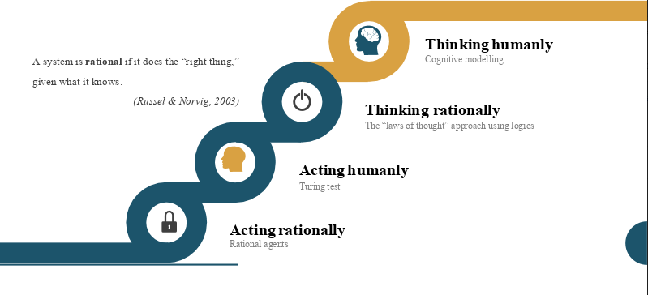
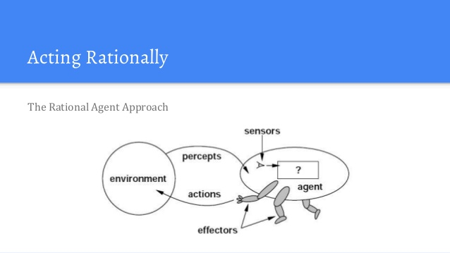

What is AI?
Artificial Intelligence has many definetions and here a table with the most commom definations.
| Said by | Defination |
|---|---|
| John McCarthy |
It is the science and engineering of making intelligent machines, especially intelligent computer programs It is related to the similar task of using computers to understand human intelligence, but AI does not have to confine itself to methods that are biologically observable |
| Bellman, 1978 |
The automation of activities that we associate with human thinking, activities such as decision making, problem solving, learning |
| Charniak & McDermott, 1985 |
The study of mental faculties through the use of computational models |
| Dean et al., 1995 |
The design and study of computer programs that behave intelligently. These programs are constructed to perform as would a human or an animal whose behavior we consider intelligent |
| Haugeland, 1985 |
The exciting new effort to make computers think machines with minds, in the full and literal sense |
| Kurzweil, 1990 |
The art of creating machines that perform functions that require intelligence when performed by people |
| Luger & Stubblefield, 1993 |
The branch of computer science that is concerned with the automation of intelligent behavior |
| Rich & Knight, 1991 |
The study of how to make computers do things at which, at the moment, people are better |
| Schalkoff, 1990 |
A field of study that seeks to explain and emulate intelligent behavior in terms of computational processes |
| Winston, 1992 |
The study of the computations that make it possible to perceive, reason, and act |
AI have Four Main Approaches that have been followed, each by different people with different methods.
Acting humanly: The Turing Test approach
The Turing Test, proposed by Alan Turing (1950), was designed
to provide a satisfactory operational definition of intelligence.
Turing defined intelligent behavior as the ability to achieve
human-level performance in all cognitive tasks, sufficient to fool
an interrogator. Roughly speaking, the test he proposed is that the
computer should be interrogated by a human via a teletype, and
passes the test if the interrogator cannot tell if there is a
computer or a human at the other end. Chapter 26 discusses the
details of the test, and whether or not a computer is really
intelligent if it passes. For now, programming a computer to pass
the test provides plenty to work on.
The computer would need to possess the following
capabilities:
- natural language processing to enable it to communicate successfully in English (or some other human language).
- knowledge representation to store information provided before or during the interrogation.
- automated reasoning to use the stored information to answer questions and to draw new conclusions;
- machine learning to adapt to new circumstances and to detect and extrapolate patterns.
Turing's test deliberately avoided direct physical interaction between the interrogator and the computer, because physical simulation of a person is unnecessary for intelligence. However, the so-called total Turing Test includes a video signal so that the interrogator can test the subject's perceptual abilities, as well as the opportunity for the interrogator to pass physical objects "through the hatch." To pass the total Turing Test, the computer will need computer vision to perceive objects, and robotics to move them about. Within AI, there has not been a big effort to try to pass the Turing test. The issue of acting like a human comes up primarily when AI programs have to interact with people, as when an expert system explains how it came to its diagnosis, or a natural language processing system has a dialogue with a user. These programs must behave according to certain normal conventions of human interaction in order to make themselves understood. The underlying representation and reasoning in such a system may or may not be based on a human model.
Thinking humanly: The cognitive modelling approach
If we are going to say that a given program thinks like a human, we must have some way of determining how humans think. We need to get inside the actual workings of human minds. There are two ways to do this: through introspection—trying to catch our own thoughts as they go by—or through psychological experiments. Once we have a sufficiently precise theory of the mind, it becomes possible to express the theory as a computer program. If the program's input/output and timing behavior matches human behavior, that is evidence that some of the program's mechanisms may also be operating in humans. For example, Newell and Simon, who developed GPS, the "General Problem Solver" (Newell and Simon, 1961), were not content to have their program correctly solve problems. They were more concerned with comparing the trace of its reasoning steps to traces of human subjects solving the same problems. This is in contrast to other researchers of the same time (such as Wang (I960)), who were concerned with getting the right answers regardless of how humans might do it. The interdisciplinary field of cognitive science brings together computer models from AI and experimental techniques from psychology to try to construct precise and testable theories of the workings of the human mind. Although cognitive science is a fascinating field in itself, we are not going to be discussing it all that much in this book. We will occasionally comment on similarities or differences between AI techniques and human cognition. Real cognitive science, however, is necessarily based on experimental investigation of actual humans or animals, and we assume that the reader only has access to a computer for experimentation. We will simply note that AI and cognitive science continue to fertilize each other, especially in the areas of vision, natural language, and learning.
Thinking rationally: The laws of thought approach
The Greek philosopher Aristotle was one of the first to attempt to codify "right thinking," that is, irrefutable reasoning processes. His famous syllogisms provided patterns for argument structures that always gave correct conclusions given correct premises. For example, "Socrates is a man; all men are mortal; therefore Socrates is mortal." These laws of thought were supposed to govern the operation of the mind, and initiated the field of logic. The development of formal logic in the late nineteenth and early twentieth centuries, which we describe in more detail in Chapter 6, provided a precise notation for statements about all kinds of things in the world and the relations between them. (Contrast this with ordinary arithmetic notation, which provides mainly for equality and inequality statements about numbers.) By 1965, programs existed that could, given enough time and memory, take a description of a problem in logical notation and find the solution to the problem, if one exists. (If there is no solution, the program might never stop looking for it.) The so-called logicist tradition within artificial intelligence hopes to build on such programs to create intelligent systems. There are two main obstacles to this approach. First, it is not easy to take informal knowledge and state it in the formal terms required by logical notation, particularly when the knowledge is less than 100% certain. Second, there is a big difference between being able to solve a problem "in principle" and doing so in practice. Even problems with just a few dozen facts can exhaust the computational resources of any computer unless it has some guidance as to which reasoning steps to try first. Although both of these obstacles apply to any attempt to build computational reasoning systems, they appeared first in the logicist tradition because the power of the representation and reasoning systems are well-defined and fairly well understood.

Acting rationally: The rational agent approach
Acting rationally means acting so as to achieve one's goals, given one's beliefs. An agent is just something that perceives and acts. (This may be an unusual use of the word, but you will get used to it.) In this approach, AI is viewed as the study and construction of rational agents. In the "laws of thought" approach to AI, the whole emphasis was on correct inferences. Making correct inferences is sometimes part of being a rational agent, because one way to act rationally is to reason logically to the conclusion that a given action will achieve one's goals, and then to act on that conclusion. On the other hand, correct inference is not all of rationality, because there are often situations where there is no provably correct thing to do, yet something must still be done. There are also ways of acting rationally that cannot be reasonably said to involve inference. For example, pulling one's hand off of a hot stove is a reflex action that is more successful than a slower action taken after careful deliberation. All the "cognitive skills" needed for the Turing Test are there to allow rational actions. Thus, we need the ability to represent knowledge and reason with it because this enables us to reach good decisions in a wide variety of situations. We need to be able to generate comprehensible sentences in natural language because saying those sentences helps us get by in a complex society. We need learning not just for erudition, but because having a better idea of how the world works enables us to generate more effective strategies for dealing with it. We need visual perception not just because seeing is fun, but in order to get a better idea of what an action might achieve—for example, being able to see a tasty morsel helps one to move toward it. The study of AI as rational agent design therefore has two advantages. First, it is more general than the "laws of thought" approach, because correct inference is only a useful mechanism for achieving rationality, and not a necessary one. Second, it is more amenable to scientific development than approaches based on human behavior or human thought, because the standard of rationality is clearly defined and completely general. Human behavior, on the other hand, is well-adapted for one specific environment and is the product, in part, of a complicated and largely unknown evolutionary process that still may be far from achieving perfection. This book will therefore concentrate on general principles of rational agents, and on components for constructing them. We will see that despite the apparent simplicity with which the problem can be stated, an enormous variety of issues come up when we try to solve it. Chapter 2 outlines some of these issues in more detail. One important point to keep in mind: we will see before too long that achieving perfect rationality—always doing the right thing—is not possible in complicated environments. The computational demands are just too high. However, for most of the book, we will adopt the working hypothesis that understanding perfect decision making is a good place to start. It simplifies the problem and provides the appropriate setting for most of the foundational material in the field. Chapters 5 and 17 deal explicitly with the issue of limited rationality—acting appropriately when there is not enough time to do all the computations one might like.
